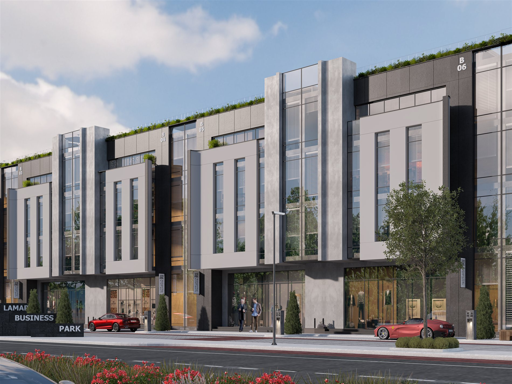
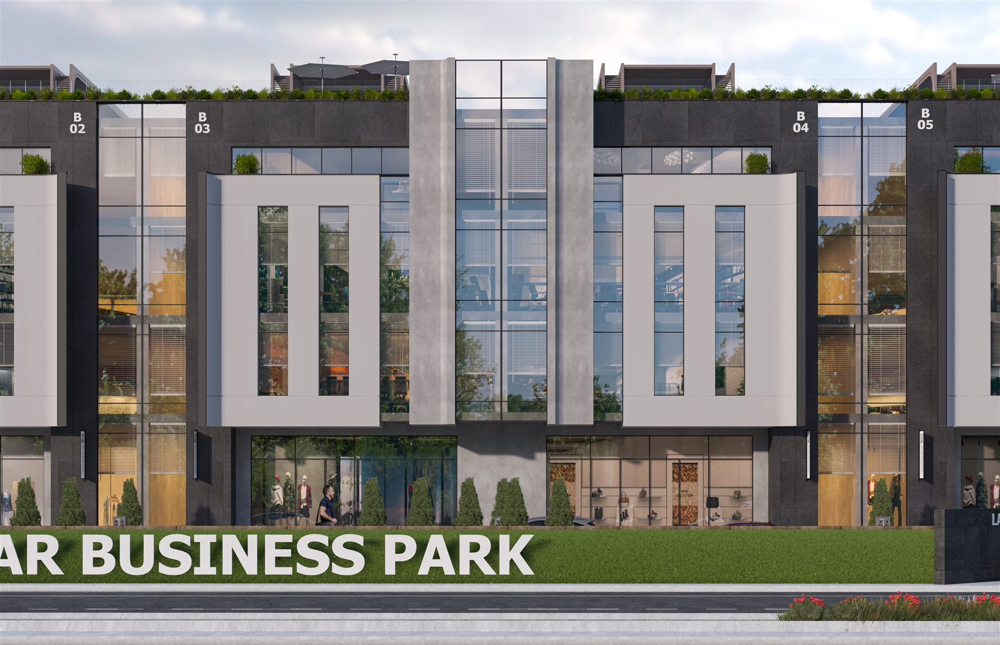

01 — Project Overview
A 30,000 m² mixed-use administrative hub.
Lamar Gate combines urban master planning with construction-ready BIM documentation for a mixed-use administrative development — site circulation, landmark architectural conceptualization and a full facade system, resolved together rather than in isolation.
02 — The Challenge
Planning and documentation, in step.
An administrative hub needs a master plan that works at city scale and a documentation set precise enough for municipal approval — site circulation, landmark form, and facade systems all had to resolve together and be delivered as one construction-ready, licensable package.
03 — Design Approach
Master plan first, facade systems developed in parallel.
Site circulation and the landmark architectural concept were developed at master-plan scale, with facade systems and construction documentation carried forward in parallel so the licensing package matched the design intent exactly.
04 — BIM Workflow
05 — Visual Development
Lamar Business Park — real exterior renders.
The three street views below are real portfolio renders of Lamar Business Park — the development's own signage is visible in-frame. The elevation set alongside them is a representative BIM documentation example from the same workflow, not project-specific.



06 — Technical Delivery
Ready for municipal approval.
- Facade system documentation
- Site circulation drawings
- Full municipal licensing drawing set
07 — Outcome
A construction-ready, licensable package.
Urban master planning and BIM documentation were delivered as construction-ready packages — including facade systems, site circulation and full municipal licensing drawings.